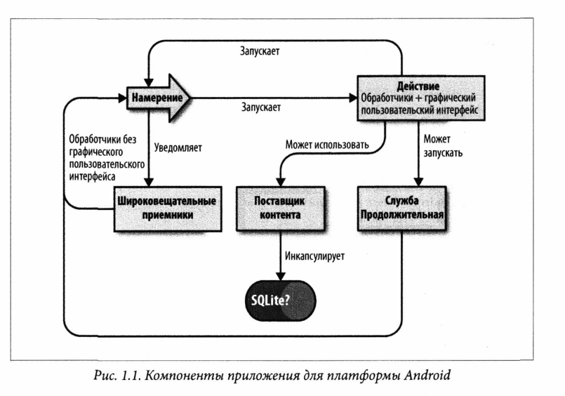

Приложение для Android состоит из одного или нескольких компонентов, написанныъ в виде классов Java:
//перенаписать текст

Приложения для Android не имеют метода main. Однако класс android.app.Activity содержит ряд четко определенных методов жизненного цикла, которые вызываются, когда приложение запускается, приостанавливается, перезапускается и т.д., а также метод, который вызыватеся, чтобы отметить активность законченной.
Приложение Android работает в своем собственном процессе Unix, поэтому в целом оно не может напрямую влиять на какое-либо другое запущенно приложение. Интерфейсы среды выполнения Android Runtime взаимодействуют с ОС, чтобы сообщать вам, когда ваше приложение запускается, когда пользователь переключается на другое приложение и т.д. Для приложение Android существует четко определенный жизненный цикл.
Android-приложение может находится в одном из трех состояний:
Ваше приложение будет переходить из одного состояния в другое по мере того, как система Android будет выполнять вызовы из текущего класса Activity в соответствующие моменты времени: